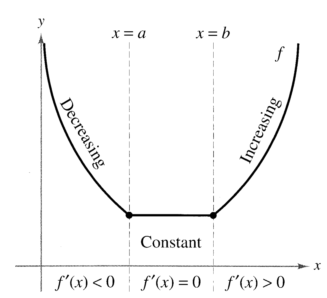

Determine intervals on which a function is increasing or decreasing. Apply the First Derivative Test to find relative extrema of a function.
In this section you will learn how derivatives can be used to classify relative extrema as either relative minima or relative maxima. We begin by defining increasing and decreasing functions. Definitions of Increasing and Increasing Functions.
A function is decreasing on an interval if for any two numbers and in the interval, implies.
A function is increasing if, as moves to the right, its graph moves up, and is decreasing if its graph moves down. For example, the function in Figure 3.15 is decreasing on the interval, is constant on the interval, and is increasing on the interval. As shown in Theorem 3.5 below, a positive derivative implies that the function is increasing; a negative derivative implies that the function is decreasing; and a zero derivative on an entire interval implies that the function is constant on that interval.
Figure 3.15: The derivative is related to the slope of a function.